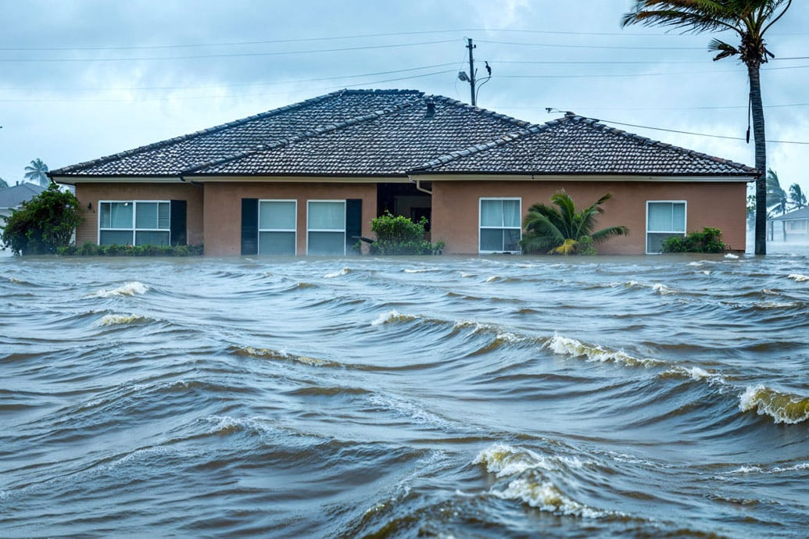
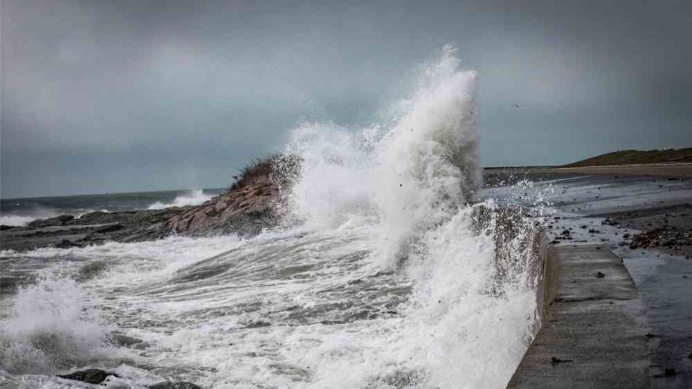
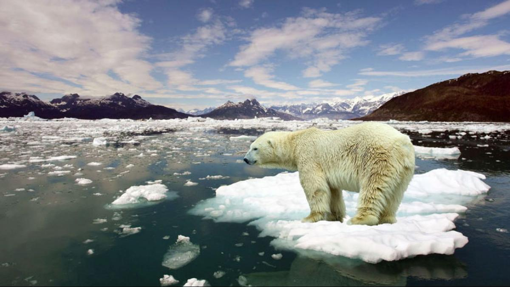

Flooding occurs when water overflows onto normally dry land due to storms, high tides, or rising sea levels.
Elevated water levels can submerge plants and ruin habitats.
Flooding causes destruction to the environment, resulting in water contamination and spreading debre.
Contaminated waters can cause significant harm to animals and plants.

Storm Surge
Storm surge occurs when strong storms (hurricanes and tropical storms) produce strong winds that force large amounts of ocean water onto land.
This sudden surge is often fast and creates a powerful impact on costal communities.
Additionally, storm surge contributes to a large increase in risks assoiated with sudden flooding on costal regions.
Because of Tampa Bay's shallow, funnel-shaped geometry, which traps incoming water and worsens flooding during storms, storm surge is one of the biggest threats.

Climate Change
The temperature in the ocean overall is rising at an alarming rate, due to a large abudance of CO2 within the atmosphere.
Warmer oceans supply more energy to storms, making powerful systems such as hurricanes stronger and more destructive.
Additionally, the overall temperature increase is melting the polar icecaps, resulting in a global rise in sea levels.
At the current rate in which the ice caps are melting, almost the entirety of Tampa Bay will be completely submerged in the far future!

Hurricanes
Due to climate change, hurricanes are becoming more and more powerful.
Stronger hurricanes can produce greater storm surge, heavier rainfall, and more severe flooding that creates irreversible damages coastal habitats as well as inland habitats.
Scientists have observed that hurricanes today tend to strengthen faster and last longer, increasing the risk to Tampa Bay’s ecosystems.